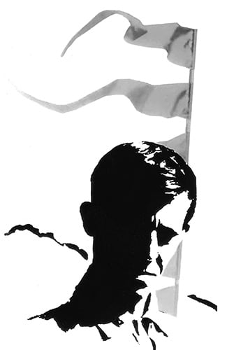
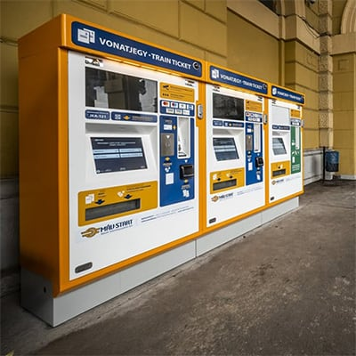

29 May, Thursday
30 May, Friday
31 May, Saturday
1 June, Sunday
2 June, Monday
Salita in Buda: 2nd district, Kisrókus st. 41
Mikebuda Park communities:
Szentendre (outside Budapest): 2000 Szentendre, Erdész utca 6
Please call ahead to attend any meeting.
More trains run on weekdays, but not all have connections to the Park
Check connections at menetrendek.hu
Train timetable and tickets at jegy.mav.hu (also available via app)
 Train ticket machines are yellow
Road No. 4: Budapest → Albertirsa, then 8 km to Mikebuda.
Highway M5: Budapest → Dabas/Albertirsa exit → Mikebuda.
Park address: Mikebuda, Mikebudai út 8
From Terminal 2, take bus 200E → Ferihegy station → train to
Albertirsa.
Cross the road bridge and buy ticket (1200 HUF) at booth or machine.
Trains to Albertirsa every 30 mins (direction: Cegléd or Szolnok, ~40 mins travel time)
Notify upon arrival for pickup at the Park.
More info: https://jegy.mav.hu/
Public transport ticket machines are purple
Taxis are yellow. Recommended companies:
Use phone or Bolt app. Fares: 1100 HUF base + 440 HUF/km. Uber uses same fares.
Beware of unofficial taxis (also yellow) overcharging tourists
100E Shuttle: Airport → Deák Ferenc tér, every 20
minutes.
Special ticket: 2200 HUF.
More info
Until 23:00: Bus 200E → Kőbánya-Kispest → Metro M3
→ Nyugati.
Last 200E: 22:39, last Metro: 23:26
23:00–00:21: Bus 200E → Határ út → Bus 914A, 914, 950A or 950 → Nyugati
00:22–03:29: Bus 900 → Bajcsy-Zsilinszky út → Bus 950A or 950 → Nyugati
Airport Shuttle Minibus (ASM): pay in EUR or card at desk. Shared rides to city (~22 EUR) More info
Estimated cost: ~11000 HUF (~28 EUR)
In the Park it’s usually colder and windier than in Budapest. The nights can be chilly, so please bring some warm clothes with you.
The local currency is Hungarian Forints (HUF). In Budapest, most places accept card. Large shops sometimes accept Euros, but exchange rates are poor. You can pay for registration and meals with Euros in the Park if necessary.
Only sold in official "Nemzeti Dohánybolt" (National Tobacco Shop).
Nearest supermarket and tobacco shop to the Park is in Albertirsa (9 km).
Local contact information
If you have registered, you will be added to a WhatsApp group for important updates during the weekend. You can leave the group at any time if you wish.